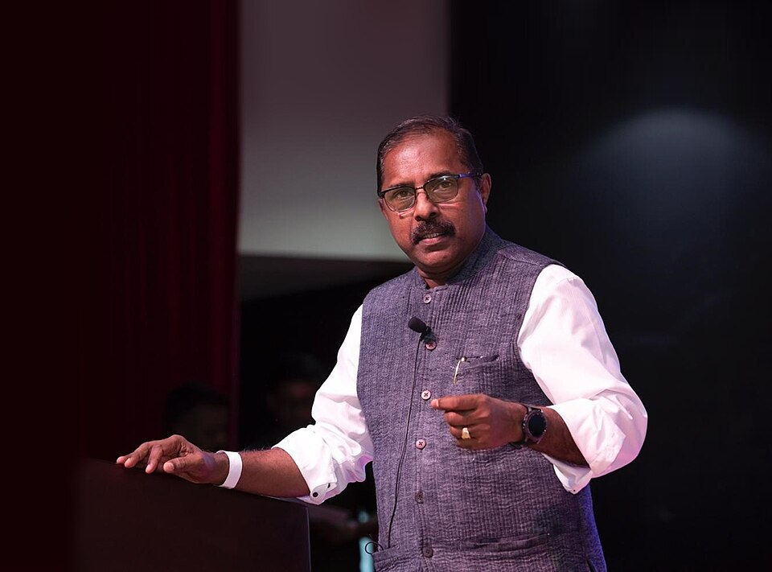

गोवा विधानसभा चुनाव: कांग्रेस ने जीएफपी और आरजी के साथ गठबंधन पर की चर्चा
गोवा विधानसभा चुनाव के लिए कांग्रेस ने जीएफपी और रिवोल्यूशनरी गोअन्स पार्टी के साथ गठबंधन को लेकर दिल्ली में बैठक की। हालांकि, सीटों के बंटवारे पर अभी तक सहमति नहीं बन पाई है।

आगामी गोवा विधानसभा चुनाव को लेकर कांग्रेस के प्रदेश अध्यक्ष गिरीश चोदणकर और अन्य नेताओं ने बुधवार को नई दिल्ली में पार्टी के राष्ट्रीय महासचिव केसी वेणुगोपाल से मुलाकात की। इस बैठक में गोवा फॉरवर्ड पार्टी (जीएफपी) और वीरेश बोरकर के नेतृत्व वाली रिवोल्यूशनरी गोअन्स (आरजी) के साथ संभावित चुनावी गठबंधन पर चर्चा की गई।
40 सदस्यीय गोवा विधानसभा के लिए होने वाले इस चुनाव में कांग्रेस और उसके संभावित सहयोगियों के बीच सीटों के बंटवारे का पेंच अभी फंसा हुआ है। रिपोर्ट के अनुसार, कांग्रेस के केंद्रीय नेतृत्व ने अपनी राज्य इकाई से कहा है कि वह गठबंधन सहयोगियों के लिए दो से तीन सीटें छोड़ सकती है। हालांकि, यह स्पष्ट नहीं है कि क्षेत्रीय दल इस प्रस्ताव से सहमत होंगे या नहीं।
और पढ़ें
मोहन भागवत बोले, अहंकार ‘मैं और मेरा’ तक सीमित है, दया से हल होंगी समस्याएं
RSS प्रमुख मोहन भागवत ने दिल्ली में एक कार्यक्रम के दौरान कहा कि रावण और राम में मुख्य अंतर अहंकार और दया का है। उन्होंने वैश्विक और घरेलू चुनौतियों से निपटने के लिए समाज से आपसी जुड़ाव बढ़ाने की अपील की।
राष्ट्रीयशाहरुख खान और करीना कपूर फिल्म 'किंग' के नए गाने में आए नजर
अभिनेता शाहरुख खान और अभिनेत्री करीना कपूर फिल्म 'किंग' के नए गाने 'डैडी कूल' में साथ नजर आए हैं। इस गाने को मुंबई में 27 नवंबर को लॉन्च किया गया, जिसे सोशल मीडिया पर सकारात्मक प्रतिक्रिया मिल रही है।
 राष्ट्रीय
राष्ट्रीयराजद सांसद सुरेंद्र प्रसाद यादव के परिसीमन वाले बयान पर सफाई
राजद सांसद सुरेंद्र प्रसाद यादव के परिसीमन के समर्थन वाले बयान से राजनीतिक चर्चा शुरू हो गई थी। बाद में उन्होंने स्पष्ट किया कि उनकी बात लोकसभा नहीं बल्कि बिहार में पंचायतों के परिसीमन से जुड़ी थी।
राष्ट्रीयरावण 'मैं और मेरा' में अटका रहा, राम करुणा के प्रतीक: मोहन भागवत
आरएसएस प्रमुख मोहन भागवत ने दिल्ली में एक पुस्तक लोकार्पण समारोह में कहा कि रावण अहंकार में अटका रहा, जबकि भगवान राम करुणा के प्रतीक थे। उन्होंने कहा कि पूरी दुनिया के सुखी रहने पर ही मानव जाति सुखी रह सकती है।